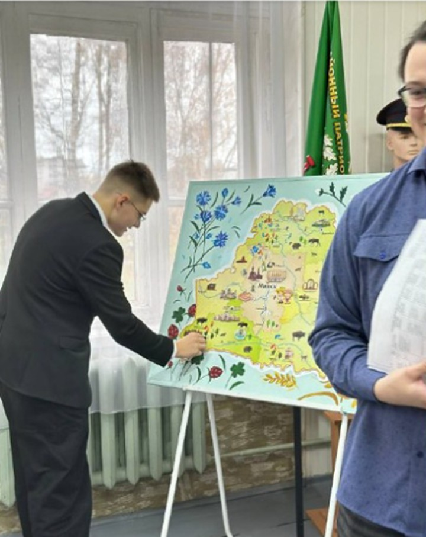
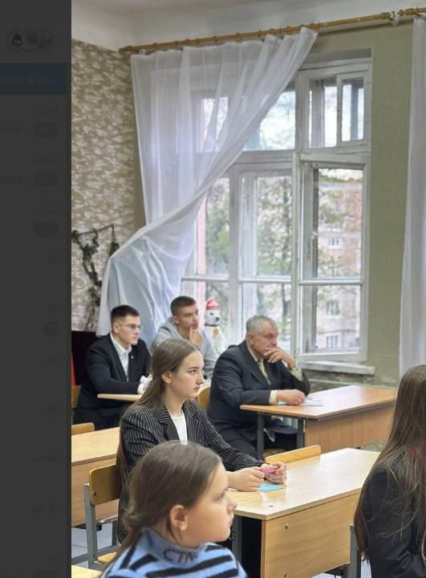
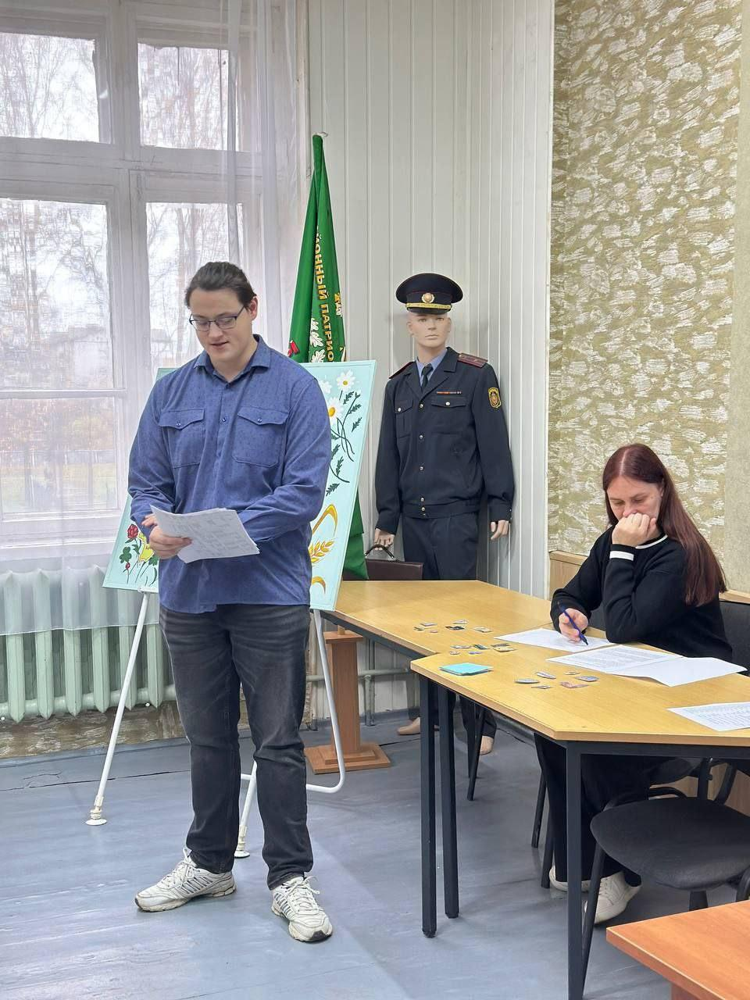
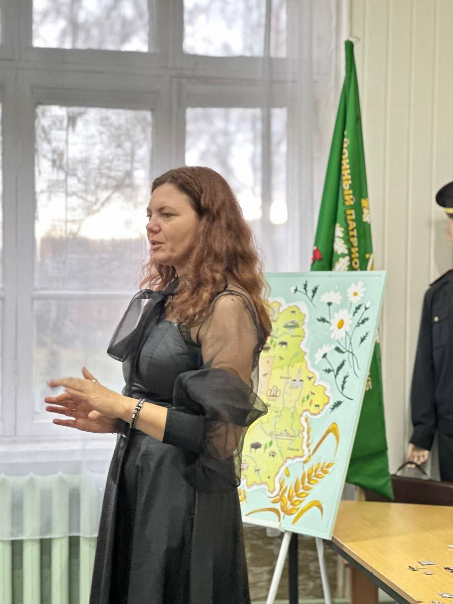

ВСТРЕЧА КОМАНДИРОВ ПАТРИОТИЧЕСКИХ КЛУБОВ
31 октября 2025 года в рамках деятельности районного патриотического клуба «Патриоты Борисовщины» на базе ГУДО «Борисовский центр экологии и туризма» состоялась встреча командиров патриотических клубов образовательных учреждений города Борисова. Клуб «Юнармец» ГУО «Гимназии №1 г.Борисова» на встрече представил Линник Степан, учащийся 9 «Г».

Участники встречи ознакомились с запланированными мероприятиями на учебный год, приняли участие в интерактивной викторине «Своя игра по Беларуси» с патриотической тематикой и прошли увлекательный тур-ориентирование по центру. По завершении тура участники посетили музей центра.

В заключение встречи командиры клубов высказали свои пожелания, в частности, предложения о желаемых направлениях для будущих поездок.

